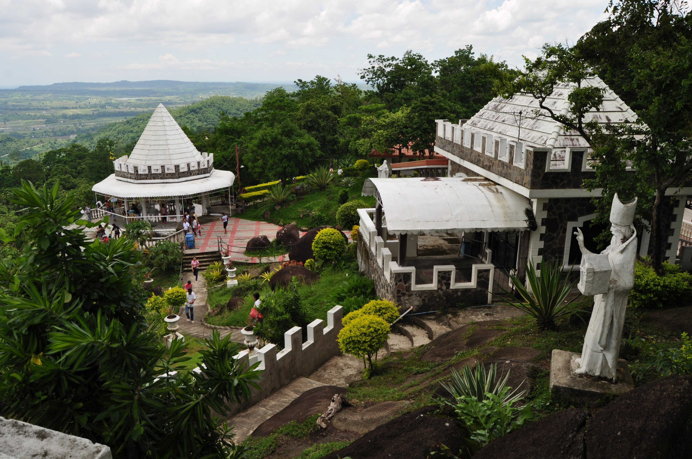
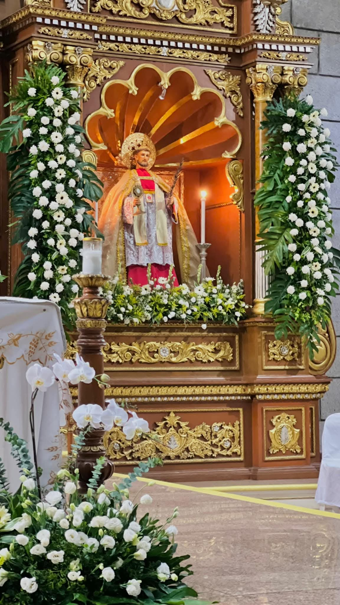

Religious Sites
Faith is woven into the fabric of Tarlac's culture. The province is home to centuries-old churches, a Benedictine monastery, and beloved shrines that draw pilgrims and visitors from all across the country.
- Monasterio de Tarlac
-

Shrine of Apo Nmat - Anao Church
- Monasterio de Tarlac: A hilltop Benedictine monastery in San Jose that houses a relic of the True Cross, drawing thousands of pilgrims every year.
- Shrine of Apo Nmat: A sacred Marian shrine in La Paz venerated for generations, set within peaceful grounds ideal for prayer and reflection.
- Anao Church: One of the oldest Spanish colonial churches in Tarlac, the Saint John the Baptist Parish has stood for centuries as a center of faith and community.